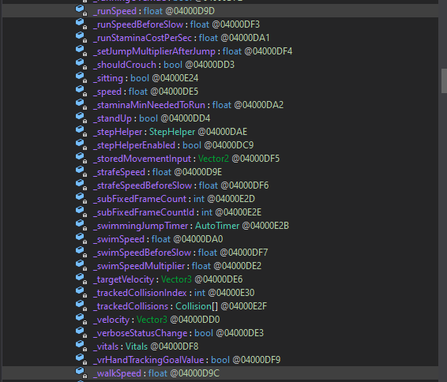
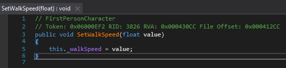

When we declare a variable outside of a method, that takes the name of field
.
They differ from the standard variables we create in methods since they persist during all the execution of the
program/mod.
To declare a field we can use the same syntax as with variables, just outside of methods, like in the example below
int num = 5; // this is an integer field with a value of 5
protected override void OnGameStart()
{
}
Fields act exactly as variables, with the only difference that they will persist after our method finishes executing.
See the two examples below to understand more.
protected override void OnGameStart()
{
int num = 5; // the num variable is created here and will be destroyed when the OnGameStart method finishes
LocalPlayer.Vitals.SetHealth(num); // sets the player health to 5
}
int num = 5; // this is an integer field with a value of 5
protected override void OnGameStart()
{
LocalPlayer.Vitals.SetHealth(num); // sets the player health to 5
}
What's the difference?
In the first example, when OnGameStart method finishes executing, the num variable gets destroyed.
In the second example, when OnGameStart method finishes executing, the num variable still exist.
As you can see, we can still use fields in our methods just like variables.
Just like methods, fields can have different accessibility types which are mainly public and private.
We will talk about this in the classes chapter along with the methods accessibility types.
In the image belowe we can see the _walkSpeed and _runSpeed fields of the FirstPersonCharacter
we basically changed indirectly in our first mod using the SetWalkSpeed and SetRunSpeed methods.

In fact, if we go look how the SetWalkSpeed method is written, we can see it changes the value of the _walkSpeed field by the parameter we pass to it. 
Fields are necessary as in many cases we may need to use a variable in many code places.
The fact that they don't get destroyed at the end of each method allow us to use
them almost everywhere and as many times as we want.